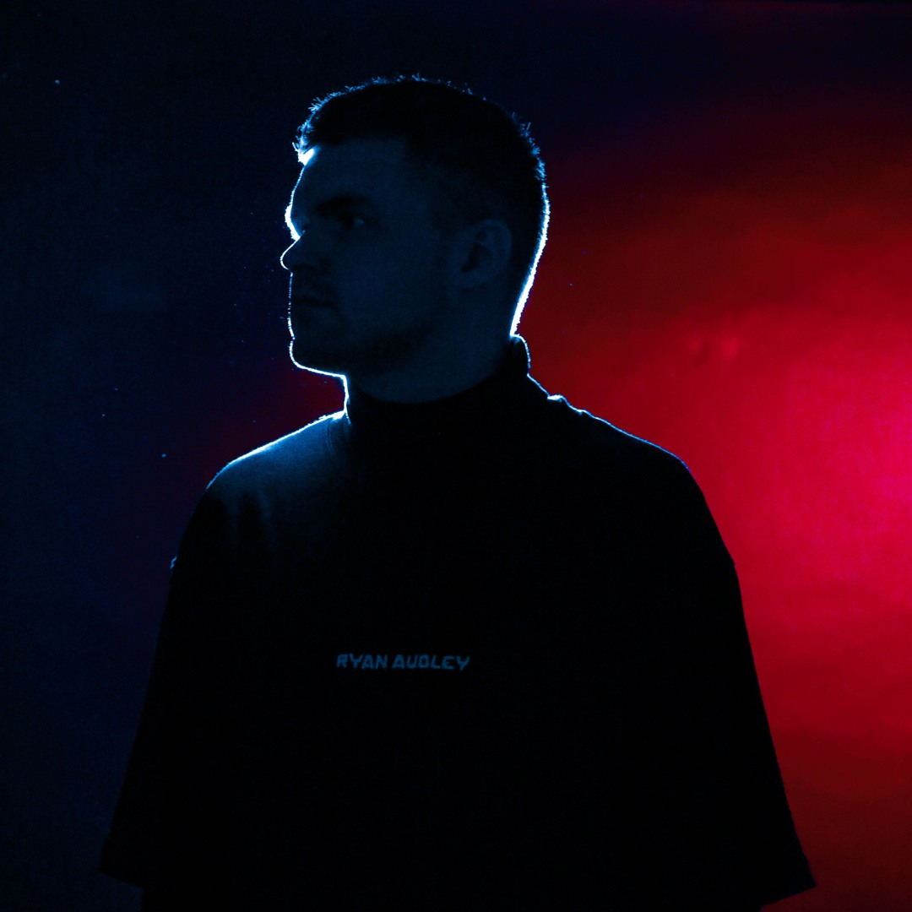

RYAN AUDLEY
Drum'n'Bass · Москва · 2002-н.в
Максим Гарев. Резидент лейбла Elephant Trunk. Продюсер, диджей из Москвы и восходящая звезда Drum & Bass сцены.
Максим отдает предпочтение жанру Dancefloor Mainstream на Drum and Bass сценах, что является редкостью и большим плюсом. Он очень энергичен и продуктивен, уже выпускался на таких лейблах как GUNSTA RECORDS, КОСТЁР ЗВУК, IGNESCENT, Liquid Brilliants, Kill Inc Drum&Bass и Monkey B Studio. Ещё целая обойма релизов готова выстрелить на DeVice и Elephant Trunk.